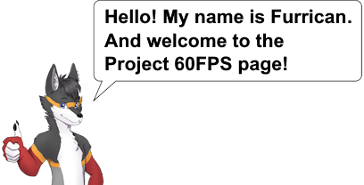
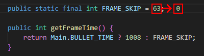
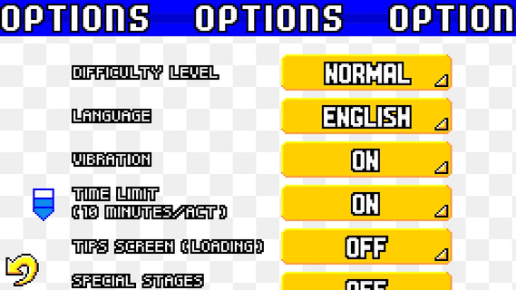
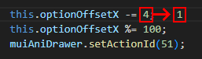
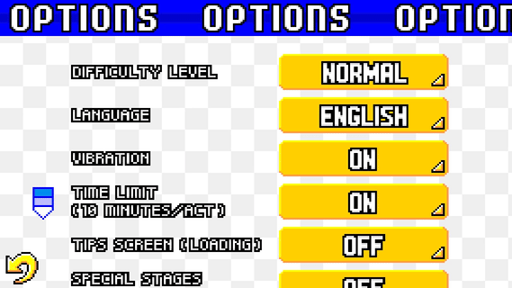
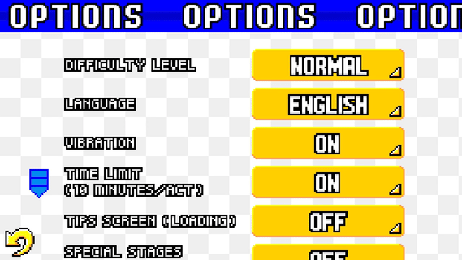
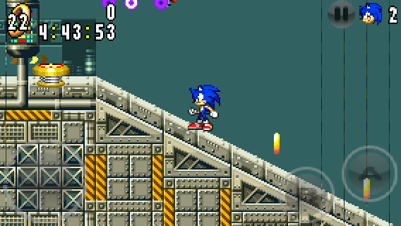

Project 60fps
Introduction
Hello and welcome to the Project 60fps page!
The goal of this project is to make the Android port of Sonic Advance run at 60fps.
However, while this sounds simple, this task is actually too demanding to make it possible.
Therefore, I made this page to explain how to make the game run smoothly and why it is complicated.
Also, if you have enough experience with Java programming and would like to give some help for this project, you can contact me via the Contact page.

How the game works
How to make the game run at 60fps?
Well... the answer is actually simple!
In source code, all you have to do is put the FRAME_SKIP value to 0 in the getFrameTime() method of the MainState file located in the MFLib folder.

Once this value is changed, recompile the APK, and voila! Problem solved, right?
WRONG! As it turns out, doing so makes the game runs too fast! It runs 4 times faster than it supposed to be.
What is going on?
Before talking about the solution, I would like to explain what is going on in the game.
First of all, we all know that the Android port of Sonic Advance has a problematic frame rate.
The Android port runs at 15fps.
While you might think that the game lags so much, the game is actually designed to run at 15fps!
Here's the proof that the game is intended to run at this frame rate:

As you can see, this is the Options menu running at 15fps.
Now, what I'm gonna do is to change the value that determines the speed of the options banner.
Located in the TitleState smali file is the optionOffsetX value set to 4.
This value determines the movement of the options banner per frame. When it's equal 4, that means the options banner moves 4 pixels to the left per frame.
For this example, I will put the optionOffsetX value to 1.

After decompilation, you can see that the options banner on top of the screen now moves 4 times slower.
Or more accurately, it moves 1 pixel to the left per frame.

However, if I make the game run at 60fps, here is how the options banner behaves:

As you can see now is that the options banner now moves at its intended speed, but in a smoother frame rate!
The options banner still moves 1 pixel to the left per frame, but because now the game runs at 60fps, it looks like I made the options banner moves smoother!
Alright. We have an example of how to fix an animation when giving the game a different frame rate.
Now, the question that is actually the right one to ask is this: How to make the game run at 60fps and at the right speed?
Well, since the game is intentionally running at 15fps, we have to change all the values regarding speed, physics, gravity, time and animation frames by dividing or multiplying all those values by 4.
In this way, the game will run 4 times slower at 15fps, but it will run at normal speed at 60fps!
Slowdows during higher frame rates
However, a new problem has been discovered after reprogramming old Android games to run smoothly while keeping the intended speed.
After experimenting with higher frame rate gameplay, we discoved that slowdowns occur when playing at higher frame rates.
Even some of the most performant mobile devices cannot mitigate slowdowns easily.
As it turns out, one key factor of the slowdown to occur are the graphics.
You see, older mobile games lack modern hardware optimizations and are not compiled with modern multi-threaded rendering in mind.
The CPU gets overwhelmed trying to draw millions of pixels on screen frame by frame based on your screen resolution, even though the game canvas only needs a small pixel resolution.
Because of this, rendering so many frames so many times than the intended frame rate may cause the device to run at its maximum capacity.
This also may cause the device to quickly heat up, trigerring thermal throttling and quick battery draining.
The underlying physics and gameplay loop require 60 internal computing cycles per second to advance time normally.
But because of the software rendering issue, the CPU can still only calculate approximately 15 updates per second.
If you force the display output to a smooth 60fps but limit the execution speed, the game engine spaces out those 15 frames over a full 60-frame timeline.
The game looks incredibly smooth because there is no stuttering, but everything moves in slow motion.
The time literally slows down by a huge percentage because the game takes nearly 4 seconds of real time to calculate one second of in-game time.
Thankfully, this problem can be mitigated by implemented a graphics API like OpenGL ES or Android Vulkan.
In this way, the GPU takes care of drawing the graphics while the CPU only takes care of the rest of the game functions.
OpenGL ES is the most recommended API, since it is compatible with many, if not all Android devices.
Gdpro's involvement
Gdpro's mod
On August 15th 2026, I have received a message from a Telegram user named Gdpro (not to be confused with GdGohan).
He sent me the source code of Sonic Advance with his modifications in it.
After installing the application from this .swb file, I realized that the game runs at 60fps while maintaining its normal speed (for the most part).
I was so amazed about this result, but I pointed out some flaws that needed to be fixed, so I asked Gdpro to fix some issues.
And after a few updates, he uploaded his mod in GameBanana (link down-below).
GPU rendering
Gdpro has recently implemented GPU rendering to prevent the CPU from being overwhelmed by rendering the graphics.
He used the OpenGL ES 2.0 graphics API to get rid of the slowdowns.
Additionally, Gdpro also added delta time for the frame rate, making the game run smoother.
After testing his latest build, the result is impressive!
Even when playing at the highest screen resolution on BlueStacks, the game runs perfectly at 60fps!
While this sounds like great news, there are things to take into consideration.
Because the source code has some compatibility issues with the graphics API, some parts of the game plays and looks off.

The issues include the certain character movements being too fast, having a gravity higher than usual, some enemies having wrong behaviors, and gaps between sprites and tiles.
Conclusion
The Project 60fps of the Sonic Advance's Android port is far from being finished, but it is possible.
However, it is still a very complicated project to make it completed.
The discovery of the slowdowns when playing on higher frame rates than intended was interesting to better understand how old mobile games were designed.
With all that said, I need help from experimented Java programmers to complete this project.
The frame rate is by far the most complained issue about the Android port of Sonic Advance.
If we can solve this issue, we can finally have the best and definitive version of Sonic Advance on Android!